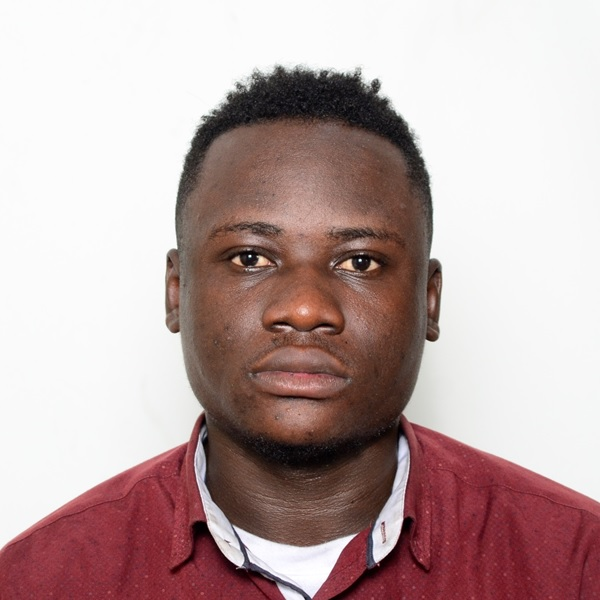

CURICULUM VITAE

IDENTITE
- NOM: BAMBU
- POSTNOM: MUKAMBA
- PRENOM: DESCARTES
- LIEU ET DATE DE NAISSANCE: KINSHASA LE 22/06/1999
- SEXE: MASCULIN
- NATIONALITE: CONGOLAISE
- ETAT CIVIL: CELIBATAIRE
ETUDES FAITES
- 2005-2011 : OBTENTION DE CERTIFICAT DE FIN D'ETUDE PRIMAIRE(EP 3 MAKALA)
- 2011-2017 :OBTENTION DU DIPLOME D'ETAT (INSTITUT MOTEYI DE LEMBA)
- 2019 5 MOIS DE FORMATION EN ANGLAIS AU CENTRE THE NEW LIGHT SCHOOL
- 2021 3 MOIS DE FORMATION EN BUREAUTIQUE OENTRE DE SPECIALISATION EN COMMUNICATION ET NOUVELLE TECHNOLOGIE AU CONGO (CECONTEC EN SIGLE)
- 2019-2022 : GRADUE EN ANGLAIS ET INFORMATIQUE DES AFFAIRES A L'UPN
STAGES FAITS
- 2017 1 MOIS DE STAGE PEDAGOGIQUE A L'ECOLE PRIMAIRE 5 DE LEMBA( EP 5 LEMBA)
- 2022 1 MOIS DE STAGE ACADEMIQUE DU CYCLE GRADUAT SUR L'ENSEIGNEMENT DE L'INFORMATIQUE A INSTITUT MOTEYI DE LEMBA
EXPERIENCE PROFFESSIONELL
1 AN DE TRAVAIL CHEZ MANASSE WADI FOUNDATION
LANGUES PARLEES
- LINGALA
- FRANCAIS
- ANGLAIS
SPORTS PREFERES
- BOX ANGLAISE
- FOOTBALL
Ceci est juste un bref détail cliquer au liens ci dessous pour en savoir plusq.
ME CONTACTER
A PROPOS DE MOI